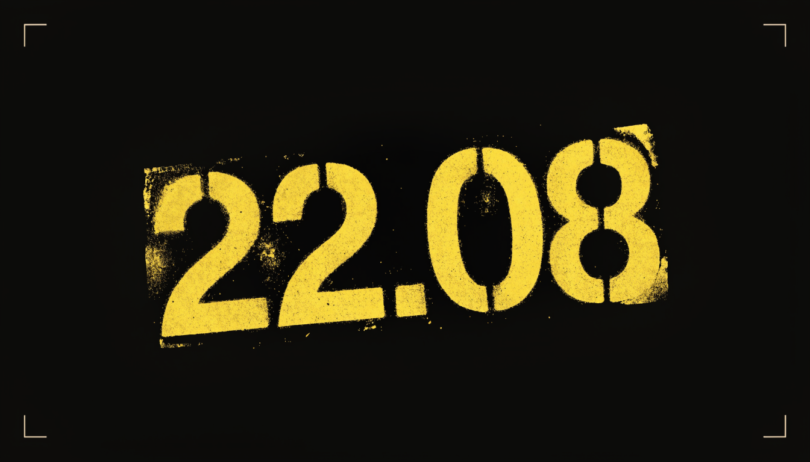
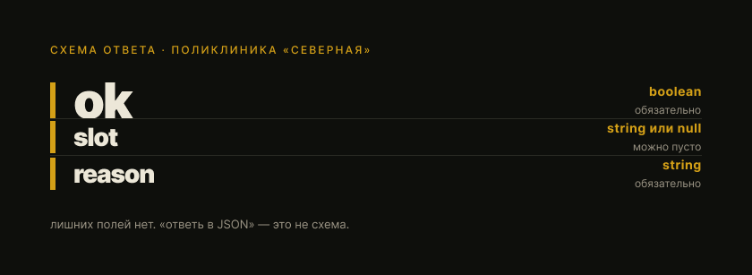

AI Ultra · 22 августа 2026
Схема, не фраза
После этой страницы пишешь три поля с типами и бракуешь фразу, которая выглядит как JSON.
Зачем это сейчас
Вечер записи в поликлинике «Северная». Бот отвечает коду: можно ли слот в воскресенье после 19:00.
Кто-то пишет «ответь в JSON». Приходит {"ok":"да","slot":19:00}. Выглядит как JSON. Схему ломает.
ok это строка. slot без кавычек. Поля reason нет.
Эта страница не про кэш, не про окно, не про роли.
Схема полей

ok — boolean, обязательно
slot — string или null, можно пусто
reason — string, обязательно
Брак
{"ok": "да", "slot": 19:00, "note": "если врач свободен"}
- ok — строка, не boolean
- slot без кавычек
- поля reason нет
- лишнее note
Ок
{"ok": true, "slot": "19:00", "reason": "окно есть"}
- ok — boolean
- slot — строка
- reason на месте
- лишних полей нет
Выглядит как JSON. Этого мало. Схему держать.
Как это устроено
Схему клади в поле API, не в фразу промпта. «ответь в JSON» это не схема [1].
OpenAI: response_format / text.format. JSON mode схему не держит [1].
Anthropic: два рубильника. Ответ — output_config.format. Инструмент — strict [3].
Gemini: схема в response_format. Чисел со стенда нет [4].
Как это садится на твою работу
Репозиторий не открываем.
Тот же вечер поликлиники. Пишешь три поля с типами. Фразу, которая выглядит как JSON и ломает схему, бракуешь.
Проверка на провал. Если написал только «ответь в JSON», правила нет.
Кто так уже делает
OpenAI, запуск 6 августа 2024. gpt-4o-2024-08-06 со Structured Outputs: 100% на их оценке сложных JSON Schema. gpt-4-0613: меньше 40% [5]. Их стенд, август 2024. Не твоя схема сегодня. На Claude и Gemini эти проценты не переносить.
Живой гайд, чтение 22.08.2026. Таблица «Adheres to schema»: Structured Outputs Yes, JSON Mode No [1].
Anthropic, лимиты компиляции, чтение 22.08.2026. 20 строгих инструментов на запрос. 24 необязательных параметра суммарно. 16 параметров с union [3]. Схема, которая проходит у GPT, здесь может дать 400 «Schema is too complex for compilation» [3].
Неочевидные решения
Схему клади в поле API. Цена: надо написать поля и типы. «ответь в JSON» это не схема [1].
Валидный JSON мало. Цена: {"ok":"да"} бракуешь, даже если парсится [1].
Два рубильника Anthropic делают разную работу. Цена: схему ответа не вешай на strict tool use [3].
Практика, 15 минут
Сцена. Вечер записи в поликлинике «Северная». Бот должен ответить коду: можно ли слот в воскресенье после 19:00.
Напиши схему ответа. Потом одну фразу, которая выглядит как JSON, но схему ломает. Эту фразу забракуй.
схема:
поле: тип
поле: тип
брак: { … }
почему брак: …
нельзя: просить ответь в JSON без схемы
Сверка (не единственный правильный текст, но такой проходит):
схема:
ok: boolean
slot: string или null
reason: string
брак: {"ok": "да", "slot": 19:00, "note": "если врач свободен"}
почему брак: ok — строка, не boolean; slot без кавычек; поля reason нет; лишнее note
нельзя: просить ответь в JSON без схемы
Сдал, если есть поля и типы, один конкретный брак, и точная строка нельзя.
Не сдан, если написал только «ответь в JSON», разобрал кэш или окно, или снова «положи правило в файл».
нельзя: открывать и менять репозиторий.
Три вопроса
- Написали «ответь в JSON». Пришло
{"ok": "да", "slot": 19:00}. Этого хватает? - В схеме
ok— boolean,reason— string, лишних полей нет. Пришло{"ok": true, "reason": "окно есть", "note": "если врач согласится"}. Пропускать или браковать? - Второй вечер снова просят «ответь в JSON» и схемы нет. Что пишешь в строке нельзя?
Ответы
- Нет. Это похоже на JSON, схему ломает:
ok— строка,slotбез кавычек, поляreasonнет. - Браковать. Поля
okиreasonна месте, ноnoteсхема не просит. - нельзя: просить ответь в JSON без схемы
Источники
[1] OpenAI. Structured model outputs. Даты на странице нет. Чтение 22.08.2026. https://developers.openai.com/api/docs/guides/structured-outputs
Что взяли: схема в response_format / text.format, не фраза «ответь JSON». JSON mode даёт валидный JSON, схему не держит. «only Structured Outputs ensure schema adherence». Когда можно, Structured Outputs, не JSON mode. Chat Completions: type json_schema, strict true. required + additionalProperties false. Function calling для инструментов, response_format для ответа человеку. Таблица «Adheres to schema»: Structured Outputs Yes, JSON Mode No.
[2] OpenAI. Changelog. August 6, 2024. https://developers.openai.com/api/docs/changelog.md
Что взяли: 6 августа 2024 запустили Structured Outputs. Ответ держит схему, которую задал разработчик.
[3] Anthropic. Structured outputs. Даты на странице нет. Чтение 22.08.2026. https://platform.claude.com/docs/en/build-with-claude/structured-outputs
Что взяли: два разных рубильника. Ответ по схеме: output_config.format. Аргументы инструмента: strict true. Не «ответь в JSON». Constrained decoding. required + additionalProperties false. output_format переехал в output_config.format, beta header больше не нужен. JSON outputs: что Claude говорит. Strict tool use: как вызывает функции. Таблица Limit / Value: 20 строгих инструментов; 24 необязательных параметра; 16 с union. Четыре строгих инструмента по 6 полей уже 24. 400 «Schema is too complex for compilation».
[4] Google. Structured outputs. Last updated 2026-08-17 UTC. https://ai.google.dev/gemini-api/docs/structured-output
Что взяли: схема в response_format, не просьба в тексте. mime_type application/json. Structured Outputs: формат финального ответа. Function Calling: действие по ходу разговора. «always validate values in your application». Стенд Probe не брал. Чисел нет.
[5] OpenAI. Introducing Structured Outputs. August 6, 2024. https://openai.com/index/introducing-structured-outputs-in-the-api/
Что взяли: 100% у gpt-4o-2024-08-06 на их оценке сложных JSON Schema, меньше 40% у gpt-4-0613. Таблица Prompting Alone / Structured Outputs (strict=false) / Structured Outputs (strict=true). Их стенд, август 2024. Не норма на Claude, не норма на Gemini, не твоя схема сегодня.
Кто собрал
- Sensei: тема и «умеет»: схема полей и типов + брак фразы + нельзя просить ответь в JSON без схемы
- Radar: источники, схема в поле API, JSON mode схему не держит, Gemini механика без стенда
- Probe: OpenAI 100% / меньше 40% их стенд август 2024; Anthropic 20 / 24 / 16; Gemini стенд не брал
- Drill: практика поликлиника «Северная»
- Арт: холст всей страницы
- K.O.: один файл, тон канона, сноски
- Hands: кладёт как есть (сейчас не звать)